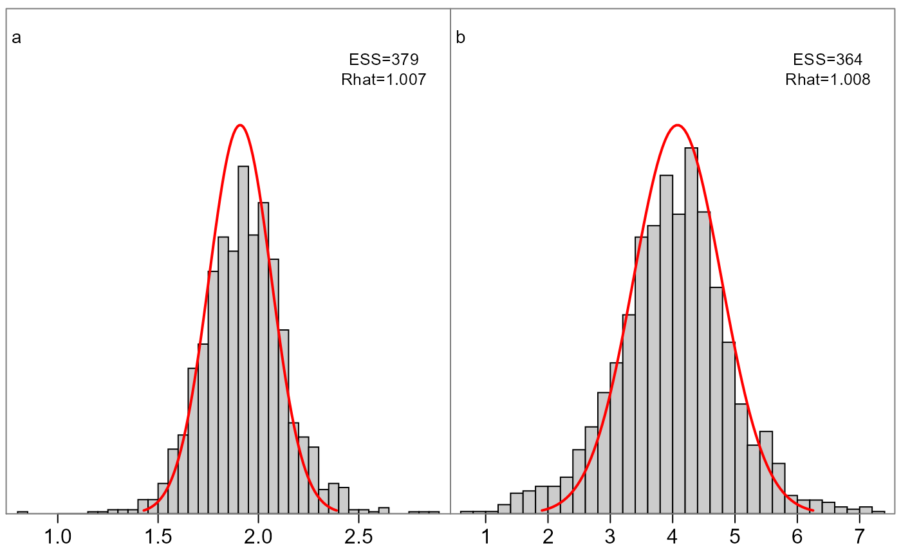

Plot marginal distributions for a fitted model
Usage
plot_marginals(
fit,
pars = NULL,
mfrow = NULL,
add.mle = TRUE,
add.monitor = TRUE,
breaks = 30
)Arguments
- fit
A fitted object returned by
sample_admb.- pars
A numeric or character vector of parameters which to plot, for plotting a subset of the total (defaults to all)
- mfrow
A custom grid size (vector of two) to be called as
par(mfrow), overriding the defaults.- add.mle
Whether to add marginal normal distributions determined from the inverse Hessian file
- add.monitor
Whether to add ESS and Rhat information
- breaks
The number of breaks to use in
hist(), defaulting to 30
Details
This function plots grid cells of all parameters in a model, comparing the marginal posterior histogram vs the asymptotic normal (red lines) from the inverse Hessian. Its intended use is to quickly gauge differences between frequentist and Bayesian inference on the same model.
If fit$monitor exists the effective sample size
(ESS) and R-hat estimates are printed in the top right
corner. See
https://mc-stan.org/rstan/reference/Rhat.html for more
information. Generally Rhat>1.05 or ESS<100 (per chain)
suggest inference may be unreliable.
This function is customized to work with multipage PDFs,
specifically:
pdf('marginals.pdf', onefile=TRUE, width=7,height=5)
produces a nice readable file.
Examples
fit <- readRDS(system.file('examples', 'fit.RDS', package='adnuts'))
plot_marginals(fit, pars=1:2)
